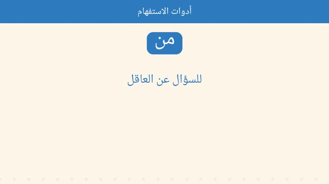
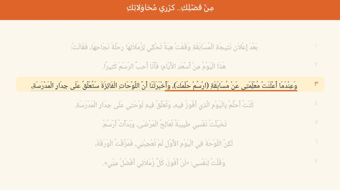
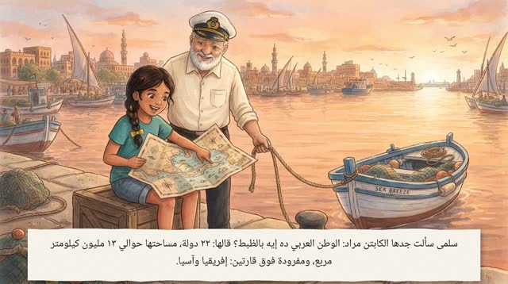
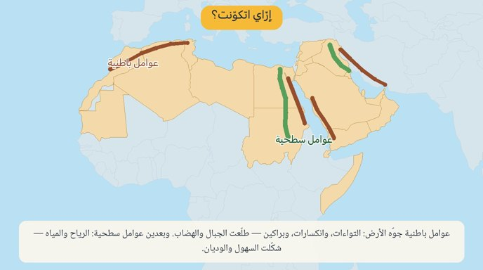
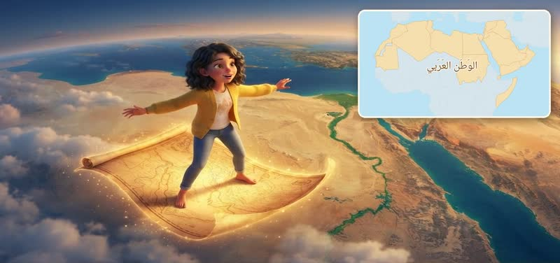
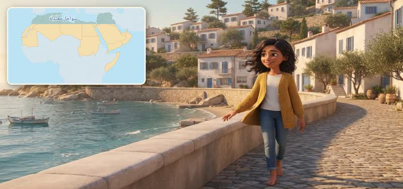

لغة عربية · الصف الثالث الابتدائي · الفصل الدراسي الأول

أدوات الاستفهام
مَنْ للعاقل · مَا لغير العاقل · هَلْ إجابتها نعم أو لا · لِمَاذَا للسبب. والقاعدة بالمصري، وكل الستة تدريبات محلولة سؤالًا سؤالًا — ١٨ سؤال.

من فضلك.. كرِّري محاولاتك
نقرا القصة سطر سطر والسطر بيتحته خط وإحنا بنقرا، وبعدين الكلمات الجديدة، وبعدين نفهم ونناقش بالمصري. ص ١٠ و١١.
المقاطع الصوتية — ص ١٧
دراسات اجتماعية · الصف السادس الابتدائي · الفصل الدراسي الأول

وطننا العربي — الموقع والأهمية
فيديو للشرح (٢:٠١) وفيديو تاني فيه ٢٨ سؤال من الكتاب والبوكليت مجمّعين حسب الموضوع (٦:٥٥). ص ٨–١٥.
وطننا العربي — الموقع والأهمية
الدرس الأول كحكاية: ٢٢ دولة فوق قارتين، الجَناحان، الحدود الأربعة، الموقع الفلكي، الحضارات والأماكن المقدسة، والممرات المائية الأربعة. ص ٨–١٥.

تضاريس وطننا العربي
جبال وهضاب وسهول، كل واحدة على الخريطة في مكانها. مدرّسة بتشرح على الخريطة (٥:١٦)، وفيديو تاني فيه ٢٦ سؤال من الكتاب والبوكليت (٧:٣٦). ص ١٦–٢٣.

ليلى والخريطة اللي نوّرت
حكاية مصوّرة عن تضاريس الوطن العربي: ليلى بتطير بخريطة قديمة وتنزل في كل شكل من أشكال الأرض. الدرس كله بترتيب الكتاب، كل مصطلح متشرح ببساطة، وخريطة صغيرة في كل محطة، وخريطة ملخّص كبيرة في الآخر.

المناخ والنبات الطبيعي
الدرس التالت كحكاية: العوامل اللي بتتحكم في المناخ، والتلات أقاليم — المتوسط والصحراوي الحار والمداري — بمناخها ونباتها وحيوانها.
التحديات البيئية في وطننا العربي
دراسات اجتماعية · الصف الأول الإعدادي · الفصل الدراسي الأول
دراسات اجتماعية · الصف الثاني الإعدادي · الفصل الدراسي الأول